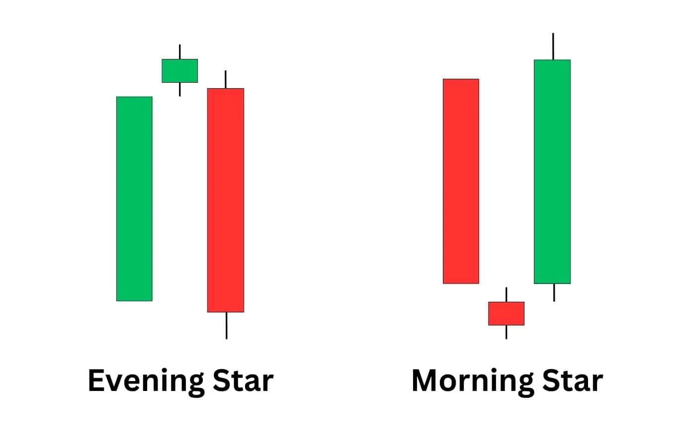
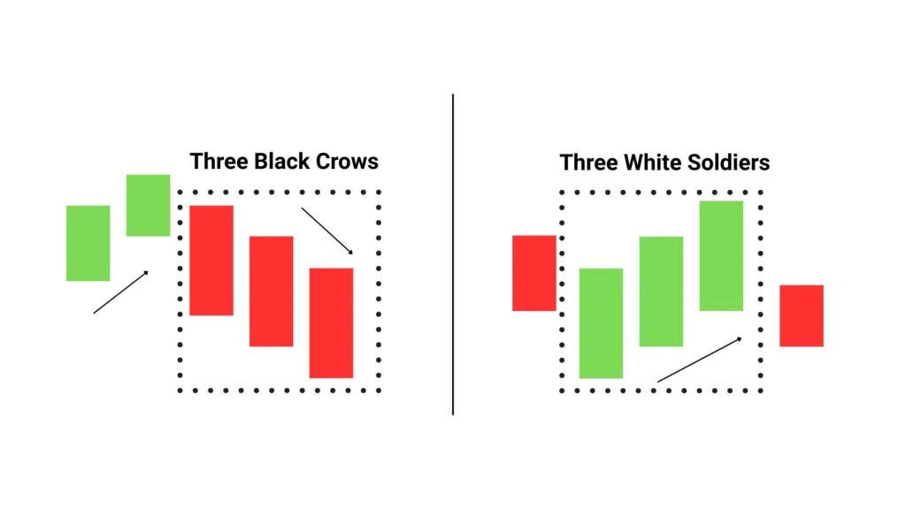
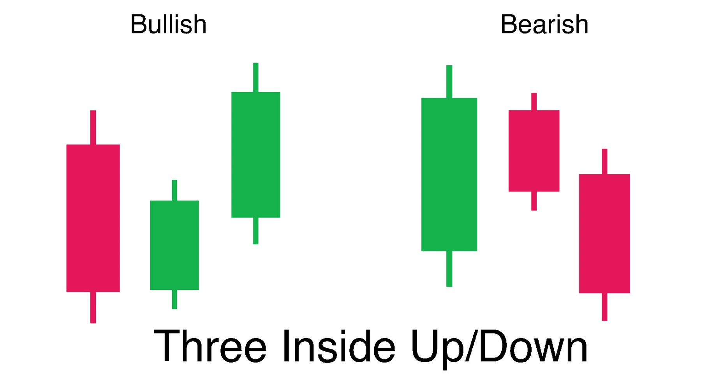

PRICE ACTION · LESSON 08THREE-CANDLE PATTERNS
Three-Candle Patterns
Three-candle patterns use three consecutive candles. Often, the first shows the prior impulse, the second shows hesitation, and the third shows a reaction in the opposite or same direction.
Morning / Evening StarThree Soldiers / CrowsThree Inside / Outside
01Morning Star and Evening Star
Patterns that may indicate weakening of the previous move.
MORNING STARMorning Star
- The first candle is a large bearish candle.
- The second candle is small and shows indecision.
- The third candle is strongly bullish and often closes above the midpoint of the first candle’s body.
It appears after a decline and may suggest a potential reversal upward.
EVENING STAREvening Star
- The first candle is a large bullish candle.
- The second candle is small and shows indecision.
- The third candle is strongly bearish and often closes below the midpoint of the first candle’s body.
It appears after an advance and may suggest a potential reversal downward.

02Three White Soldiers and Three Black Crows
Three consecutive candles with bodies pointing in the same direction.
Three White Soldiers
Three consecutive bullish candles, each closing higher than the previous one. Small wicks and steady progress may indicate sustained buying pressure.
Three Black Crows
Three consecutive bearish candles, each closing lower than the previous one. They may indicate sustained selling pressure.

03Three Inside Up and Three Inside Down
The second candle is smaller and remains within the first candle’s range.
Three Inside Up
- First: a large bearish candle.
- Second: a small candle within the first candle’s range.
- Third: a bullish candle that closes above the confirmation level.
Three Inside Down
- First: a large bullish candle.
- Second: a small candle within the first candle’s range.
- Third: a bearish candle that closes below the confirmation level.

04Three Outside Up and Three Outside Down
Here, the second candle engulfs the first and the third confirms the direction.
Three Outside Up
The first candle is bearish, the second forms a bullish engulfing pattern, and the third closes higher to add confirmation.
Three Outside Down
The first candle is bullish, the second forms a bearish engulfing pattern, and the third closes lower to add confirmation.

- Identify the context first.The pattern should be assessed in relation to the preceding trend or consolidation.
- Check the location.A reaction at support or resistance is more meaningful than the same pattern in the middle of an arbitrary range.
- Wait for the third candle to close.Do not treat an unfinished formation as confirmed.
- Plan the trade.Define the entry, stop, target and monetary risk. If the risk/reward is not reasonable, skip the trade.
They are not automatically reliableThree candles do not automatically make a pattern more reliable than a one- or two-candle pattern. Context, pattern quality and rules tested in advance matter more.
Quick check
What does the third candle in a Morning Star show?
Answer: A stronger reaction from buyers, which may confirm that selling pressure is weakening.